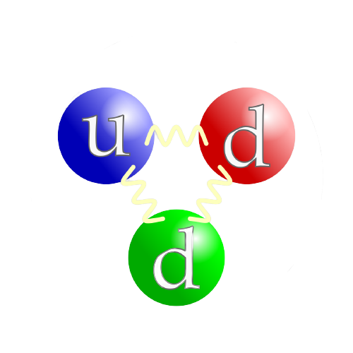

Quarks are one of the fermions groups and have 6 flavors: Up, down, charm, strange, top and bottom. For example protons are made out of 2 up quarks and 1 down quark, while neutrons out of 1 up and 2 down quarks. The quarks experience all 4 kinds of the forces and by combining, with the help of the strong nuclear force they can form another type of particle called a hadron, but they can't exist in individual form. Up and down have the smallest mass out of all quarks, hence they’re the most stable, as the heavier quarks tend to decay into up and down after some time anyway. Quarks also have 3 main properties such as: mass, electric charge and spin, which all affect their interactions with other particles.
